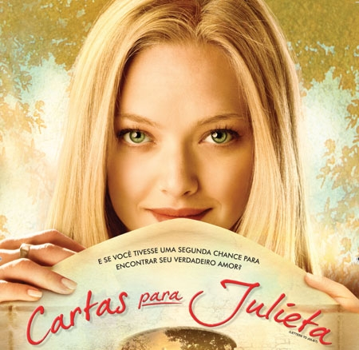

Sophie (Amanda Seyfried), uma aspirante à escritora de revistas, e seu noivo Victor (Gael García Bernal), um aspirante a chef de cozinha em seu próprio restaurante, embarcam para uma lua-de-mel que não acontece. Ele, parece estar mais preocupado em fazer contato com fornecedores, enquanto ela deseja passear pelos muitos lugares românticos da cidade. Destino ou não, Sophie conhece um grupo de mulheres que responde às cartas deixadas na Casa de Giulliete (conselheira amorosa) e passa a acompanhá-las. Num certo dia, ela encontra uma carta de 1951 e a responde. Inspirada pela resposta, a dona da carta, Claire Smith (Vanessa Redgrave), aparece disposta a reencontrar seu amor perdido. Acompanhada pelo seu neto Charlie (Christopher Egan), a aventura acontece em belas paisagens cheias de momentos de muita alegria, grandes descobertas e tristes desencontros. Nessa busca, uma história de amor floresce entre Charlie e Sophie, que passa a questionar-se sobre o seu noivado e o significado do verdadeiro amor.
2010
Gary Winick
Conheça a história dos personagens